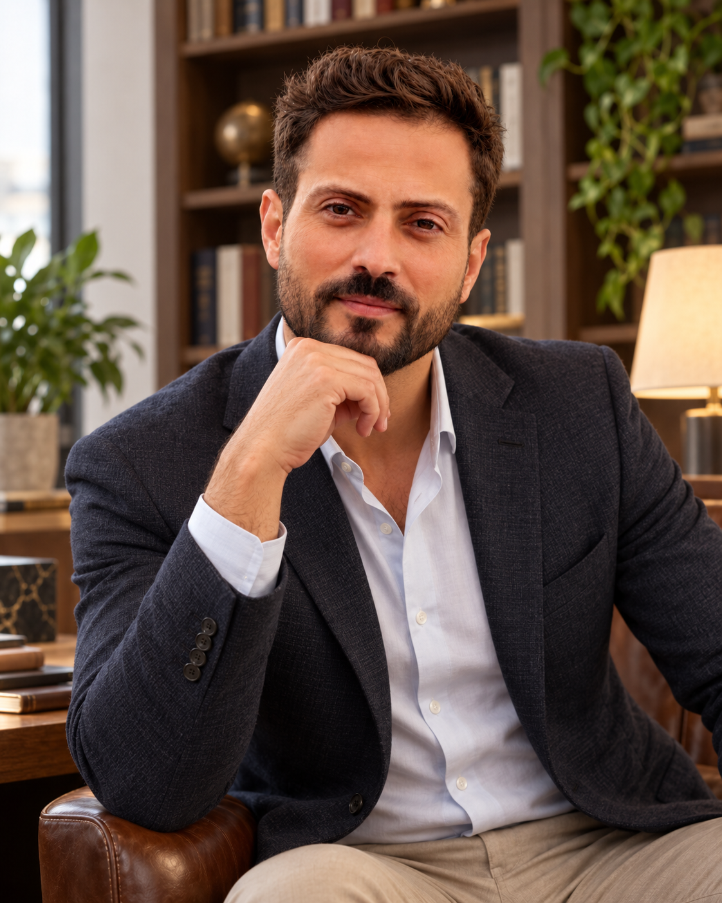
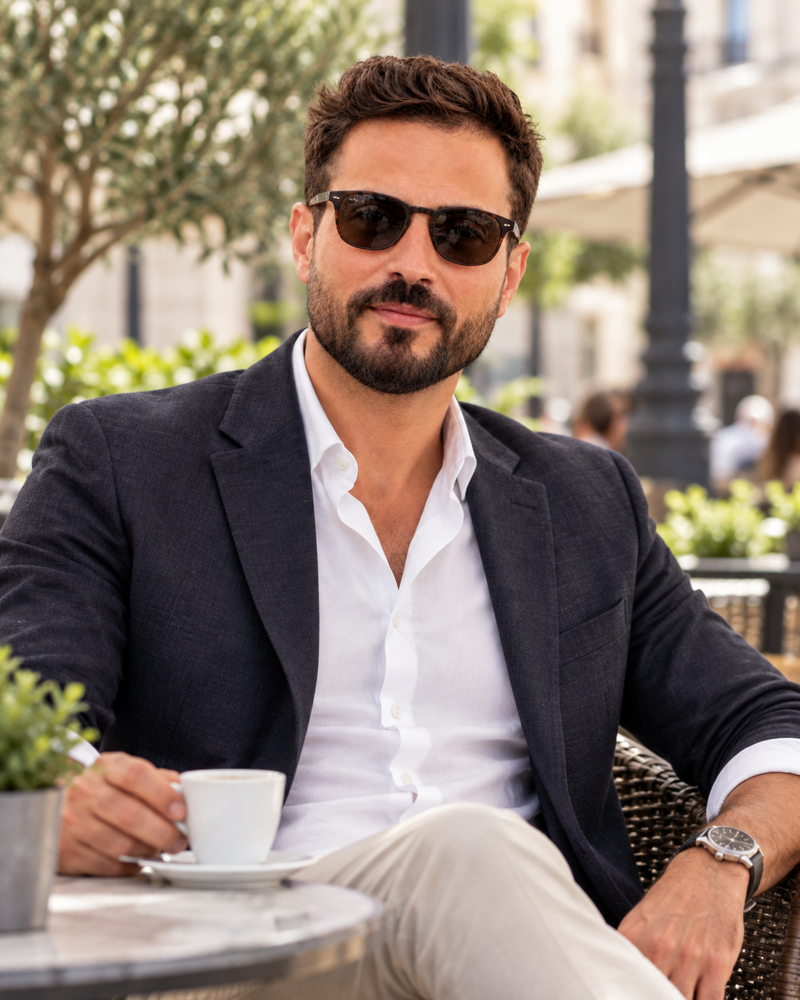
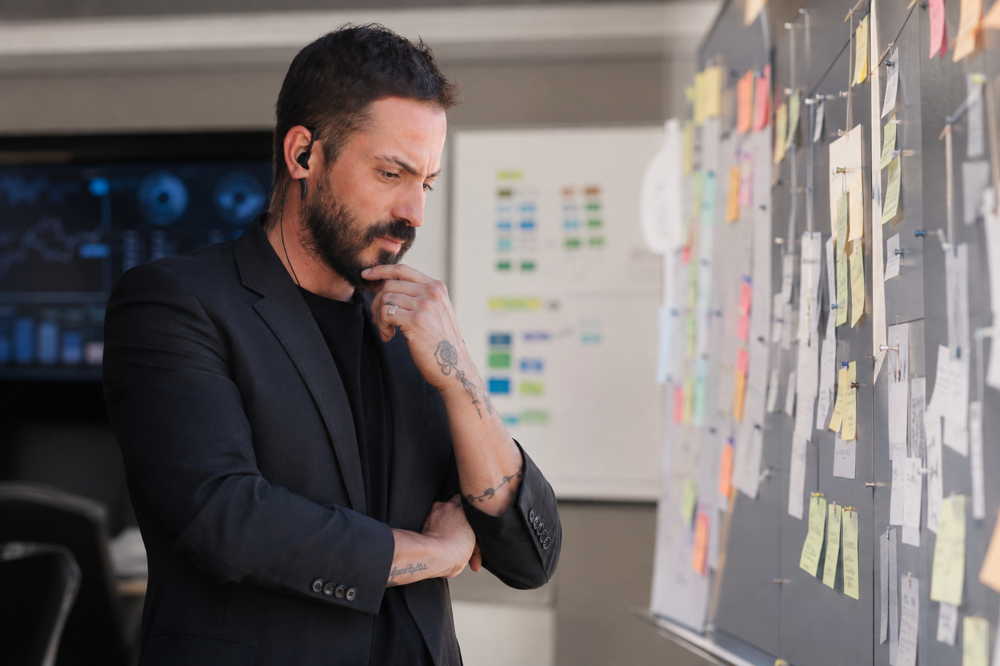
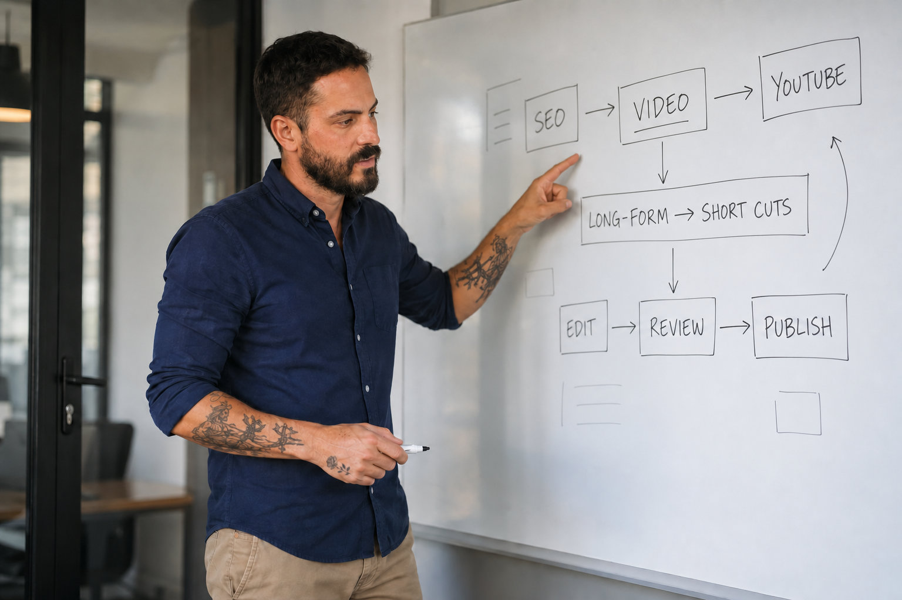
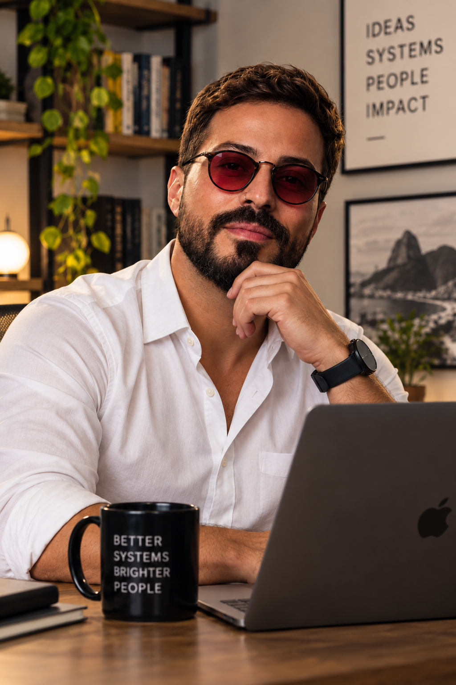

LEADERSHIP & FACILITATION
Clarity and facilitation in group settings.
Teaching, academic coordination, hospitality management and operational coordination taught me to align people, information and next steps around the work at hand.
A multidisciplinary professional connecting business operations, U.S. real estate, CRM, customer journeys, digital workflows and AI-assisted systems — with experience across sales, marketing, teaching, hospitality and hands-on execution.


For nearly three years, I worked 100% remotely supporting U.S. real estate operations across North and South Carolina. Transaction coordination was part of the job, but never the whole of it. I also worked across CRM and listing workflows, marketing coordination, calendars and email, documentation, executive and client support, video editing and publishing, keeping very different parts of the operation moving together.
My independent digital career has kept me hands-on across web design, SEO, blogs, social media, content, video, marketing operations, sales support, CRM, workflows and practical systems. I’m comfortable learning unfamiliar tools, connecting disciplines and moving from strategy to execution without losing sight of the operation as a whole.
Remote work fits that way of working. It depends less on proximity than on clarity, ownership and follow-through, and it is the environment in which I most want to continue building, supporting and improving operations.
I work across business operations, real estate, CRM, digital workflows and automation to organize information, reduce manual steps and keep execution moving.

Coordination, documentation, schedules, follow-up and cross-functional execution.
Custom workflows, CRM logic, operational controls and AI-assisted tools built around real work.
Buyer and seller transaction coordination across MLS Canopy, SkySlope and Zillow Showcase, with CMA support.
Lead intake, pipeline organization, follow-up, marketing actions and continuity through closing.
WordPress, legacy preservation, SEO content, YouTube workflows and digital production.
English/Portuguese communication, teaching, interpretation, sales prospecting, marketing and client support.
Applied work across operations, systems, content, web preservation and professional positioning.
Built around the agent's actual operating rhythm, the system connects the work that happens before a listing with CRM context, transaction data, documents, deadlines, closing follow-up and stage-based marketing needs. The point was not to force a professional into a generic workflow, but to turn the way that person already worked into a structured, reusable operating system.
I turned the recurring information in a Recurrent Spreadsheet into a lightweight workflow using HTML and Google tools. It captures information once, keeps it consistent and carries it into later transaction work.
Video editing was one part of a broader content operation: shaping long-form material into shorter cuts, adapting it for social channels, and connecting review, approval, metadata, SEO and publishing protocols.

I rebuilt an outdated WordPress presence on a new platform while keeping the original site available as a working archive and reference. The new environment supports current publishing while preserving years of content, context and SEO value.
I structured an end-to-end project for an architect returning to professional practice. The work connected an identity interview, positioning, website, private development environment, data recovery and persistence, conceptual studies and opportunity research. The goal was not to manufacture experience, but to create a system that helps the professional learn, produce evidence, present herself honestly and return to the market.
Real estate, ERP sales, teaching, coordination, marketing, events, hospitality and digital work shaped a practical mix of commercial awareness, communication, process improvement and initiative.
The work also involves people: creating clarity, making complex ideas easier to follow and keeping handoffs moving.
Teaching, academic coordination, hospitality management and operational coordination taught me to align people, information and next steps around the work at hand.
Interpretation, teaching and client-facing work shaped a clear working style: set the context, make the process visible and name the next action.
In 100% remote U.S. real estate operations, I coordinated calendars, email, listings, transactions and continuity across the people and systems involved.
These experiences sharpened communication, adaptability and steadiness under pressure.
Provided English–Portuguese interpretation for Mariah Carey's team during a specific engagement in Barretos.
Provided professional English–Portuguese interpretation for senior international leadership at Agrishow.
Teaching experience plus English–Portuguese translation of books and texts.
Prospecting experience across software and property markets.
Continuing education across commerce and marketing.
Professional development training through IPOG.
Technical training in Electromechanics at CEFET.

Choose the English, Portuguese or Spanish ATS version.